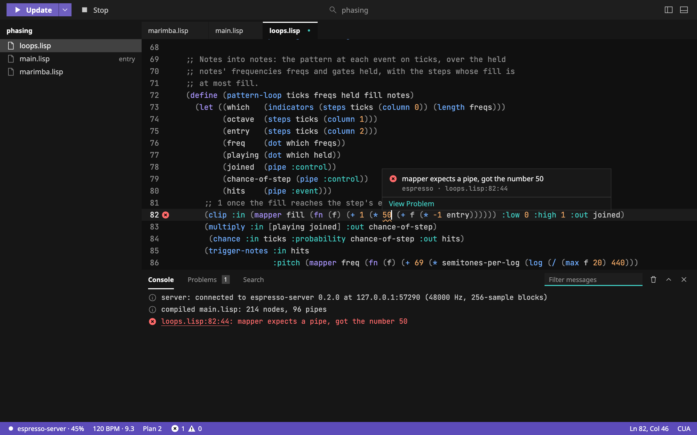
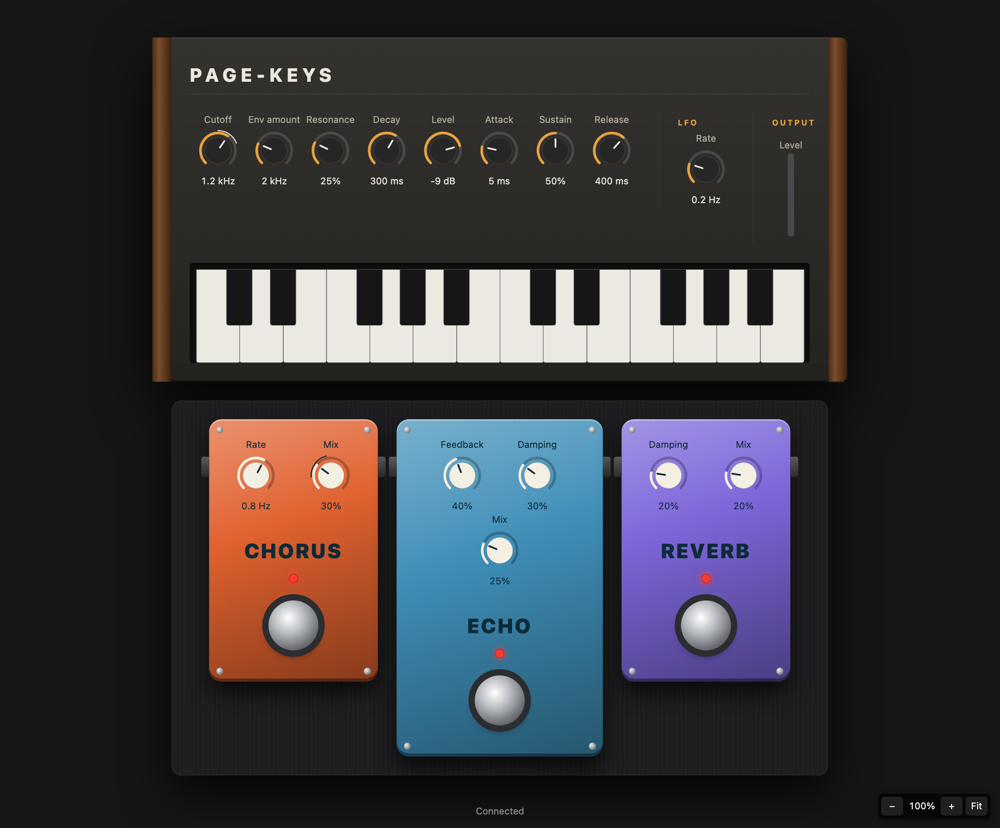
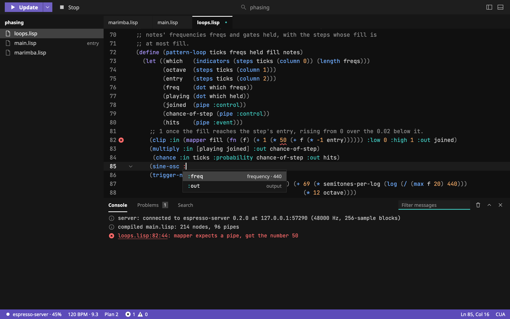

Write what makes the sound,
and how it plays.
espresso is a workstation for music written as code, and the Lisp dialect its pieces are written in. A piece builds its instruments and effect chains from primitives, draws their controls as a synthesizer's panel and a pedalboard, and decides how they are played: from recordings and spectra, by chance and live data, and by rules on a beat clock. A native engine plays it in real time, and changes to the code swap into the playing sound.

Make sounds
Instruments and effect chains, in the language
An instrument or an effect is a class whose methods build a graph of primitives: oscillators, filters, envelopes, delays, buffers, and spectral processors. Its settings are slots marked as controls, so the same class draws itself as a synthesizer's panel or as a pedal, and a chain of effects is a pedalboard. The standard library holds subtractive, FM, plucked, sampled, and drum instruments, and echo, chorus, reverb, overdrive, granular, and spectral effects, written in the same language as a piece's own.

page-keys, drawn from its instrument's and effects' controls. The server serves it while the piece plays.(import "std/instruments") (import "std/effects") ;; A tremolo of the piece's own: a pedal ;; with a Rate knob on the pedalboard. (defclass tremolo (effect) ((rate :initarg :rate :initform 5hz :accessor rate :control (knob :min 0.5hz :max 12hz)))) (defmethod process ((tr tremolo) in out) (let ((swing (pipe :control))) (lfo :rate (rate tr) :depth 0.5 :offset 0.5 :out swing) (gain :in in :amount swing :out out))) (defpiece main () (let ((synth (make subtractive :cutoff 1200hz)) (notes (keys "Keys")) (dry (pipe :audio)) (out (pipe :audio))) (define panel (synth-panel synth notes)) (play synth notes dry) (define board (chain dry out (make tremolo) (make echo :time 0.75beat) (make reverb))) (audio-out :in out :channel 0) (page panel board)))
Decide how they play
Acousmatic, aleatory, and automatic
The same piece that builds a sound decides its performance. A piece can play for loudspeakers alone, leave choices to chance and to the world, or follow rules that run by themselves, and any mix of the three.
Acousmatic
Sound from recordings and their spectra: buffers loaded from sound files, sample players, clouds of grains, and spectral delays and freezes, rendered offline or played live.
Aleatory
Choices left to chance and to live data: seeded random generators, chance and random sequences, and sources that read the weather, a stream of wiki edits, or every public post as it happens.
Automatic
Music that runs by its own rules: sequencers and metronomes on a beat clock whose tempo the piece sets, MIDI clip loops that change on the grid, and modulators that move the instruments' knobs.
The editor
Play while writing
The GUI editor plays the project on each Play and swaps each Update into the sound without stopping it: unchanged parts keep their state and changed ones crossfade. Errors and warnings point to their place in the code, completion knows the language's forms, primitives, and the keywords of each call, and a piece's page opens in a tab or a window of its own.
- Key schemes for CUA, Emacs, Vim, and nano
- The language reference and standard library in the editor
- A terminal editor for the same projects
- Headless playing and offline renders from the command line

:: the parameters and ports of the call.The engine
Real time, and the same every time
A native engine
A C++ engine plays the compiled graph on PipeWire through JACK. Its audio thread neither allocates memory nor takes a lock, and a change of plan reaches it through lock-free queues.
Several cores
Independent parts of a piece run on worker threads beside the audio thread, and the output is bit-identical at every thread count.
Determinism
The same piece and seed render the same file every time, so an aleatory piece can be heard again exactly, or performed anew with another seed.
Start